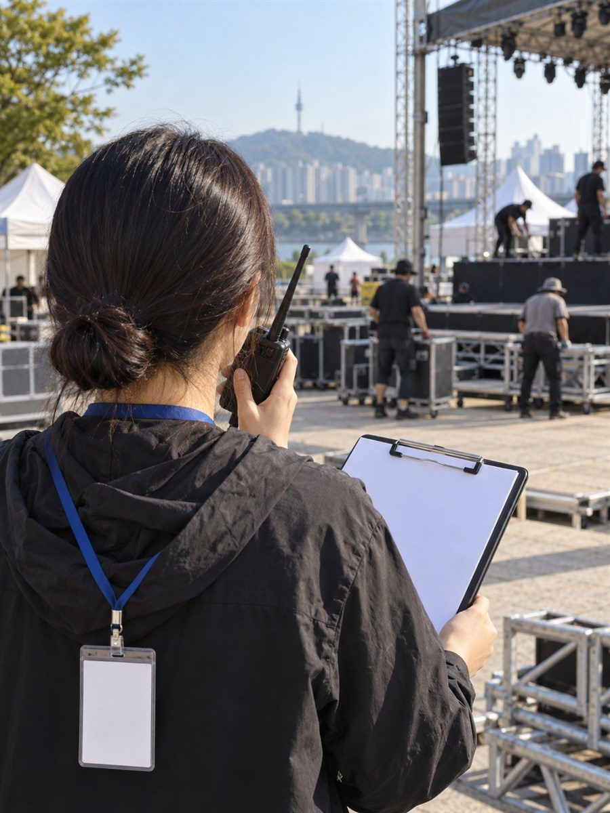
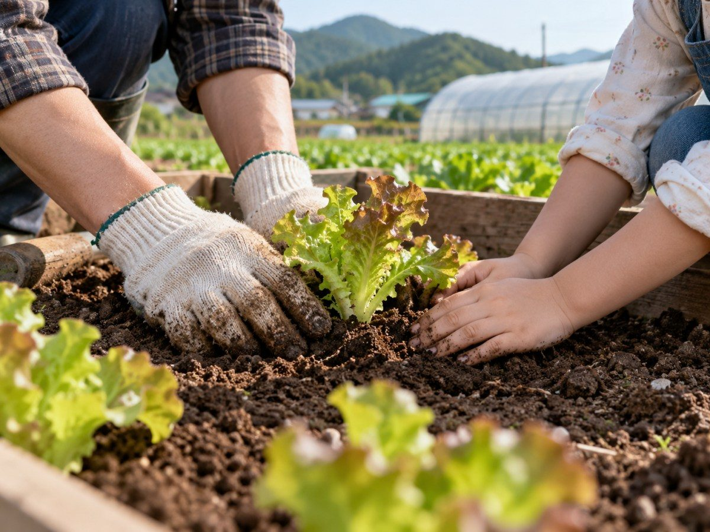

강찬희

사람과 현장을 이해하고
가능성을 기획하다.
강찬희

강찬희
○○
○○
- 문화예술/
엔터테인먼트 - 농업분야
- 치유농업 및 관광체험
- 언론인
- 탐정사 1급 자격 보유
- 브랜딩 코칭 및 컨설팅
1

문화예술/엔터테인먼트 기획
문화예술 공연, 행사 및 축제 기획 및 운영총괄
| 공연 | ○○ |
|---|---|
| 축제 | ○○ |
| 행사 | ○○ |
| 놀이문화 | 뉴스포츠 지도자, 스포츠스태킹, 야영지도 및 훈육지도, 레크리에이션, 드론 |
3
강찬희
농업/치유농업 연결
치유농업과 관광체험을 활용한 연계 농업
| 치유농업 | ○○ |
|---|---|
| 관광체험 | ○○ |

4
언론탐구
탐정사 자격을 갖춘 차별성이 있는 언론인
| 언론 | 국회, 공공기관, 산하기관, 출입기자 |
|---|---|
| 자격 | 탐정사 1급 |
5
강찬희
교육, 미디어, 축제, 브랜딩 컨설팅/평가 자문 성장
개인과 기관, 조직의 정체성을 발굴하는 브랜딩 코칭 및 컨설팅
| 교육분야 | 청소년지도사, 사회복지사, 학교폭력예방 스피치지도사, 또래보건교육강사, 솔리언또래교육강사 |
|---|---|
| 평가 및 자문, 컨설팅 |
|
6
강찬희
진행 상황
진행 상황을 불러오는 중입니다.
7
강찬희
가능 분야
학교 · 기관 · 기업
- 또래보건교육
- 솔리언또래상담지도
- 가정폭력상담
- 학교폭력예방교육
- 레크리에이션
- 스피치교육
- 브랜딩 컨설팅
- NCS 교육
- 조직 문화 활성화 프로그램
- 민원 소통 문화혁신방안

8
표지